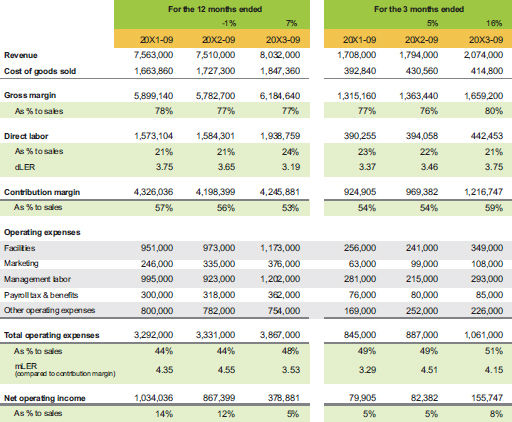

Launch capital for expansion: Rolling 3 performance

Not every business has consistent activity in every quarter, but when you do have consistency (or a limited seasonal business cycle), rolling 3 is a powerful pacing tool to show a shorter-term picture of your business performance. From this case example, we immediately learned from the company’s rolling 3 data that they hit a new high in contribution margin and its percentage to sales. Like I said earlier, contribution margin is the critical number because it shows the productive output of the business engine, and it gives you more choice about what to spend your operating expenses on.
After we spotted this company’s encouraging trend, we then extrapolated it to an annual number (see table 6.7) and evaluated it from there.